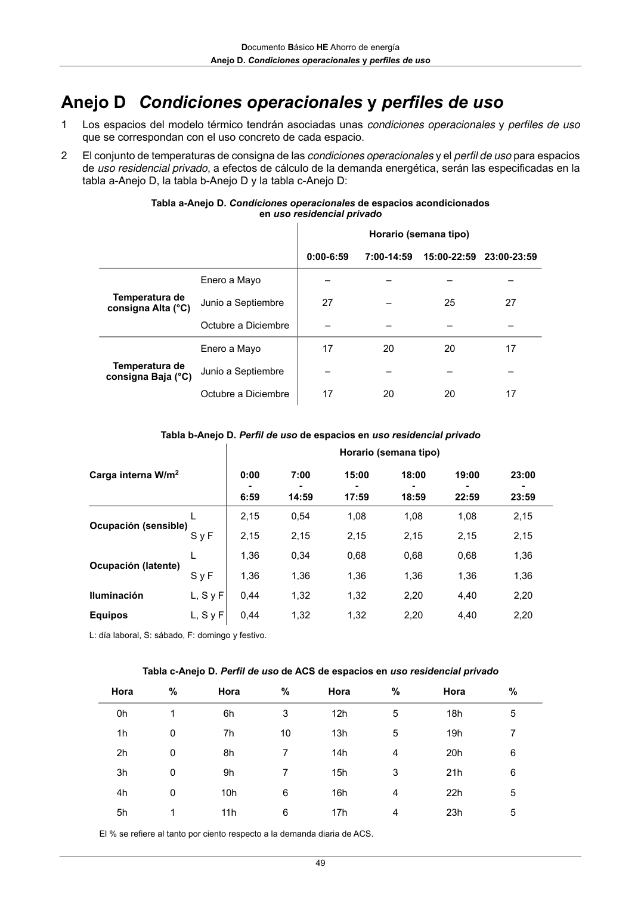

DB-HE · Anejo D. Condiciones operacionales y perfiles de uso · versión 2022-06-14
SHA256: 7f890bd495552e979f83f72c5f5c7b642e745911a8e343a7b5b73023ce0e1f05 · página física 49 de 56 · métodos de encabezado
solo si están cotejados.
Formatos: Markdown · JSON de bloques · PDF p. 49 · imagen PNG
Documento Básico HE Ahorro de energía Anejo D. Condiciones operacionales y perfiles de uso 49 Anejo D Condiciones operacionales y perfiles de uso 1 Los espacios del modelo térmico tendrán asociadas unas condiciones operacionales y perfiles de uso que se correspondan con el uso concreto de cada espacio. 2 El conjunto de temperaturas de consigna de las condiciones operacionales y el perfil de uso para espacios de uso residencial privado, a efectos de cálculo de la demanda energética, serán las especificadas en la tabla a-Anejo D, la tabla b-Anejo D y la tabla c-Anejo D: Tabla a-Anejo D. Condiciones operacionales de espacios acondicionados en uso residencial privado Horario (semana tipo) 0:00-6:59 7:00-14:59 15:00-22:59 23:00-23:59 Temperatura de consigna Alta (°C) Enero a Mayo – – – – Junio a Septiembre 27 – 25 27 Octubre a Diciembre – – – – Temperatura de consigna Baja (°C) Enero a Mayo 17 20 20 17 Junio a Septiembre – – – – Octubre a Diciembre 17 20 20 17 Tabla b-Anejo D. Perfil de uso de espacios en uso residencial privado Horario (semana tipo) Carga interna W/m2 0:00 - 6:59 7:00 - 14:59 15:00 - 17:59 18:00 - 18:59 19:00 - 22:59 23:00 - 23:59 Ocupación (sensible) L 2,15 0,54 1,08 1,08 1,08 2,15 S y F 2,15 2,15 2,15 2,15 2,15 2,15 Ocupación (latente) L 1,36 0,34 0,68 0,68 0,68 1,36 S y F 1,36 1,36 1,36 1,36 1,36 1,36 Iluminación L, S y F 0,44 1,32 1,32 2,20 4,40 2,20 Equipos L, S y F 0,44 1,32 1,32 2,20 4,40 2,20 L: día laboral, S: sábado, F: domingo y festivo. Tabla c-Anejo D. Perfil de uso de ACS de espacios en uso residencial privado Hora % Hora % Hora % Hora % 0h 1 6h 3 12h 5 18h 5 1h 0 7h 10 13h 5 19h 7 2h 0 8h 7 14h 4 20h 6 3h 0 9h 7 15h 3 21h 6 4h 0 10h 6 16h 4 22h 5 5h 1 11h 6 17h 4 23h 5 El % se refiere al tanto por ciento respecto a la demanda diaria de ACS.
